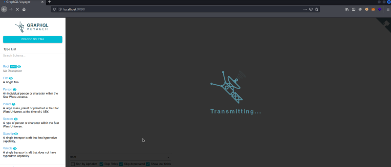
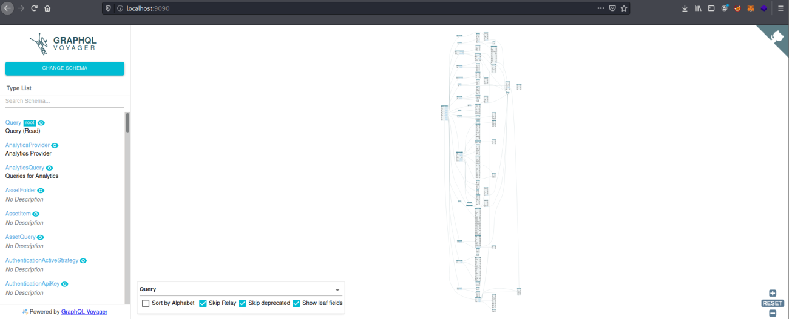

Visualize on GUI
GraphQl Voyager:
You can visit the site:
https://apis.guru/graphql-voyager/OR
To install it locally:
https://github.com/APIs-guru/graphql-voyager/blob/master/example/webpack-example/README.md1. Run
npm install && npm run build:release in the root repo directory
2. Navigate to this directory (example) in Terminal
3.
npm install4.
npm start5. Open your browser to the address listed in your console. e.g.
Project is running at http://localhost:9090/  